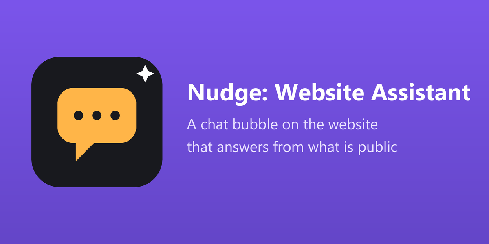

Published products only, with the price the website shows (taxes as the shop is set), the availability and the link of the page.
The files you mark public and the text of your published pages, found by words and by meaning when the local search model is there.
"Where is my order?", "How much do I owe?": read with the customer's own rights and the rules of the portal, with the link to the portal page.
English and Arabic. Community and Enterprise. Odoo 17, 18 and 19.